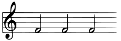

Беседа 2207 от 3877 · Беинса Дуно
Търпение, чистота и приложение
Сряда, 5 часа сутринта
(Времето топло и тихо.
Небето с бледи звездици.)
Добрата молитва
Ще прочета следующите места от Свещената книга – 13 глава от I-во Послание към Коринтяните и 24 глава от Притчи.
Апостол Павел, който минаваше за апостол Христов, след като говорил дълго време установя[ва] и вижда, че човек не може да има големи постижения в света, каквото и да прави, колкото и да знае, каквато и сила да има. И той е дошъл до същите заключения, до които е дошъл и Соломон. И той започва с основната идея – „Любовта дълготърпи, Любовта не се гордее.“ (13:4) Тази, последната дума има скончание „дее“. На вола казват „дий“. Това значи да тръгне. Не му казват тръгни, но му казват: „дий“. Значи горделивият не знае накъде да тръгне. Човек, който е горделив излиза от свой център. „Любовта не безобраствува“. (13:5) В какво седи безобраствуването? Някой път човек безобраствува със своя живот, със своите очи, със своите движения, със сърдцето си. Някой път съзнателно, а някой път несъзнателно. „Любовта никога не отпада.“ (13:8) В нея няма обезсърчение. Това е Любовта. И когато човек се обезсърчи, по някой път, това се отнася вече до неговите чувства.
(След това Учителя прочете 24 глава от Притчи.)
Тази глава има встъпление, в което се излага от какво човек трябва да се пази, после показва [на] човек пътя, по който трябва да се стреми. (Учителят прочете отначалото до 15 стих на Притчи и каза : Който се интересува повече, прочетете останалото.
(Изпяхме песента „Бог е Любов“.)
Сега минаха празниците. Настана делничен ден. Бог започва с работата и после почива. Хората обратно – първо почиват дълго време и после работят. Хората преди да са почнали да работят, си почиват. Бог дълго време чака, за да добият някакъв плод, милиони години чака, а пък човек преди да е посял нещо, пак чака. Сега, може би, някой от вас чакате да получите нещо, без да сте работили. Който дойде, изведнаж иска да стане светия, някакъв гений. Не е лошо. Хубаво е желанието, но работа трябва. И каквото и да се каже, не правете онова, което ходжата прави. Колкото и високо да се качи, той все казва: „Ил Аллах.“ Минарето има три викала. „Мохамед Ил Аллах“, това значи: Правата вяра на Мохамеда, Бог да разпространи по целия свят. С векове напомнят на Господа: „Един е Господ, Един е Господ.“
Сега ние ще оставим това. Всеки един човек си има по един ходжа. Няма някой от вас, който да няма по един ходжа. И всеки един от вас си има по един поп. И всеки един от вас си има по един владика. И всеки един от вас си има по един патрика. И всеки един от вас си има по един генерал. И всеки един от вас си има по един полковник. Изобщо, много малко хора имат редовий. Един гръцки кораб отива в Русия. На едного казвали, че е капитан, на друг казвали, че е капитан и т.н., наредили се много капитани и русите питали: „Где ви са редовите?“ Всички все капитани. В новото учение гледам всички все капитани. Като влезеш, много малко редови ще намериш. Капитан, генерал, патриарх, владика с високо мнение за себе си. Не е лошо. Не е лошо човек да има високо мнение за себе си. Но това трябва да отговаря на действителността.
Ти искаш хората да имат високо мнение за тебе, да те уважават хората. Искаш да се молиш на Бога и Бог да те слуша. Но да те слуша Господ трябва да знаеш как да говориш на Бога. Ти направиш една молитва на Господа с раздвоено сърдце, за 4–5 минути и искаш да те чуе. Ти отиваш при Бога, но не си забравил работата си в света. И сутринта даже някой път отлагаш молитвата си и казваш: „Господ ще търпи.“ Тогава какво става? Господ търпи. И когато се намериш в местото на голямото мъчение, Той ти казва: „И ти трябва да търпиш.“ Молиш се, молиш се, нито глас, нито слишание. Ти, като станеш сутринта без да се измиеш, имаш грозде, тичаш и се наядеш и не мислиш за молитва. Не, като станеш сутринта помисли, че Бог е Любов. Започни с Любовта. Казваш: „Какво да правим?“ – Отворете 13 глава и започнете. Кое е качеството на Любовта?
Мнозина от вас пеете, нали? Но не зная колко пари може да изкарате с това си пеене. Ако останете с пеене да се прехранвате, някой от вас много оскъдно ще живеете. Един човек, който след като пее, има голямо страдание, познава се, че той не е певец. Жалко е когато той не може да се прехранва с пеение. А пък колцина от вас може да се прехранвате с вашият сладък език? Колко души от вас?
Сега, по някой път, вие мислите, че човек е много учен, нали? Ще си послужа с едно обяснение. Музикантите имат една система, която е временна – петолиние. Без тези 5 линии не могат да четат. Без линиите не знаят къде да турят нотите. Някои препоръчват да има 3 линии. Сега са приети 5 линии. Но не са само те. Има и други линии не са само 5. Но 5-тя са основни, отгдето започват. Музикантите си имат ключове, с които определят нотите. Всеки един от вас може да бъде музикант. Какво означават нотите без ключове? Като туря ключ „сол“, каква нота е написана на черната дъска? (– Фа)

„До“ си има свое движение. Има силни и слаби движения, бързи и леки движения. По какво се отличават бързите движения. Глупавият се движи винаги много полека, а умният се движи бързо. Глупавият казва: „Ще го направя, ще го направя“ и докато се накани той, изгубват се условията. Сега някой път вие седите с идеята, че знаете някои работи. Стегне те сърцето. Защо те стяга? Всякога човешкото сърдце се стяга, когато искаш да постигнеш и не може да го постигнеш. Когато нещо желаеш да постигнеш и не можеш, стегне те сърдцето. Значи щом те стегне съдцето, ти си желал нещо, което не може да постигнеш. Това желание нарушава онзи ритъм на сърцето. И тогава от Невидимия свят те питат, ти спираш Божествения трен. Кондукторът идва и те пита: „Защо спря трена?“
Аз съм ви говорил за онзи гръцки поп, който пътувал през Румъния и носел една хубава калимявка. Излязъл вятър. Попът се навел през прозореца и калимявката му паднала. Един му казал: „Дигни ръчката на спирачката.“ Той я дигнал, дошъл чиновникът и казал: „Какво има?“ – „Калимявката ми падна.“ Той платил скъпо за спирането на трена. Платил толкова, че с тая сума 10 калимявки можели да се купят. Този поп, като си навел главата през прозореца, трябвало да си снеме калимявката и после главата да провре през прозореца. Щом си проврете главата през един прозорец на природата, калимявката ви ще падне. Тя не търпи никакви човешки калимявки. Защо щом влезете в църквата снемате шапката си? От почитание. Това не е кой знай какво. Шапката е турена за студени времена, за да не би да се простуди главата ти. Но влизаш в топла стая. Има ли нужда да си носиш български кожен калпак. Или, влизаш в баня да се окъпеш. Има ли нужда да държиш своя калпак на главата си?
Някои ваши идеи приличат на калпаци, които носите на главата си. Че ти носиш един калпак на сърдцето си, който калпак те стяга. Да кажем, че сте крайно честолюбив. Имаш високо мнение за себе си, понеже знаеш, че в кръвта ти тече нещо особено, царско. Някой път това е невидимо. Някой път си смирен. (Учителят прави движения на смирение.) Ти казваш: „Много добре съм.“ Той не говори истината. Сърдцето му тупка, а пък той говори, че е добре. Някой е сериозен. Виждам, че той не е постигнал нещо. Някой е сериозен и гледам, защото му е дошла една призовка. Призовката му е сериозна, а не той.
Сега помнете, че аз не говоря за вас, но говоря за общите принципи, за целия живот. Ти се намираш в известно състояние, тъжен си. Но тъгата не е едно свойство, едно качество на живота. То е едно временно състояние само на твоя ум на твоето сърдце. В дадения случай, в тази форма, при тези условия, при които се намираш, ти усещаш тъга, но тази тъга не е обща, не е за цялото битие. Тази тъга не подразбира, че всички същества са скръбни. А някои отиват толкова далече, щото казват, че има мирова скръб. Това са общи заключения. Може да има, може да няма. Това трябва да се докаже. Скръб всякога има за едно непостигнато желание.
Казвам сега, „до“ – човешкия ритъм. Кое е свойството на „до“? Вие не сте пяли „до“, да имате едно откровение за „до“. Вие сега изучавате музиката, тъй както сега съществува. Ами, ако отидете в ангелския свят, как ще пеете? Или ако отидете при най-видните музиканти, които са учители на съвременната музика, като се съберат, как ще пеят? Всеки, който преподава музиката и не може да я чете, той не е музикант. Мнозина, които минават за много даровити музиканти, не могат да пеят. Мнозина даровити не знаят да свирят, я пък знаят да съчиняват. Много се лъжат. Музиката не е написана. Аз, като виждам съвременната музика, виждам едно неестествено съпоставяне на нотите. В някои пиеси е турено повече движение в музиката, отколкото вътрешното съдържание. В някои е турено повече прекалена мисъл. В някои музикални парчета е турена прекалена алчност, т.е. да загребиш нещо, да стегнеш, да прегърнеш, да вземеш всичко за себе си. А пък в някой е направена много лека песента: „Да цъфнеш и да окапеш.“ Някои песни са направени така, че да чувствуваш един окапал плод. А пък много малко има класически песни, такива, че да съответствуват на твоя ум, тело, сърдце и душа. Някой път слушам като пее някой, някоя песен или свири. Хубава е песента, но това означава една песен на безпокойство на сърдцето, едно безпокойство на ума, едно въртене. Решава да направи едно, решава да направи друго и най-после оставя работата ненаправена. Казваш: „Много хубава песен.“ Ти пееш, но след тази песен в теб ще остане пак също състояние. Вземете българската песен: „Цвете мило, цвете красно.“ Този глас българите са го взели от запад. Ако аз бих пял „Цвете мило“, не бих пял с този глас. Той не съответствува на думите. Как започва тази песен? (Някои изпяха тази песен.) От кой тон започва? – Започва от „до“. Ни най-малко не трябва да започва от „до“, а трябва да започва от „сол“. Желанието на цветето не е да живее, а да цъфне, защото то вече живее, а авторът му туря желанието да живее. Онзи, който цъфти, той вече живее.
Хубаво, искаш да станеш религиозен човек и почваш от „до“. Ти, за да станеш религиозен, не трябва да започнеш от „до“. Ти казваш: „Аз трябва да живея.“ Че Господ ти е дал живот, ти трябва да работиш, да учиш. Религията е цяла наука. Трябва да отидеш при един учител по музика. Не само да се облечеш хубаво, да си туриш вратовръзка, да си изящен отвън. Това е второстепенно. Учителят не изисква толкова да си много добре облечен, той гледа как ще пееш. Ако ти пееш, както той иска и се водиш по неговата система, ти ще му бъдеш обичан. Но ако не се водиш по неговата система, той ще ти каже: „Аз не мога да ти преподавам. Трябва да отидеш при друг.“ Ти отиваш при Бога и казваш: „Аз трябва да бъда морален.“ Господ не се нуждае от морал. Казваш: „Аз трябва да бъда благодарен [благороден].“ Господ не се нуждае от твоето благородство. От какво се нуждае? – От разбиране. Ти трябва да разбираш Великите истини, които Той е внесъл в света. Ти говориш за Любовта. Знаеш ли какво нещо е Любовта? Любовта е първата песен на Бога. Ти, ако не знаеш да пееш, животът ти ще бъде нещастен от единия край до другият. А пък, ако знаеш да пееш, животът ти ще бъде щастлив от единия край до другия.
Не мислете, че аз ви държа отговорен за нещо. Но искам да ви избавя от една самоизмама, която имате. Вие отивате при една обикновена бакалница и купувате нещо и онзи ви повръща нещо. Без да четете парите, вие ги туряте в джоба си. Но бакалинът е човек нечестен. Вие му давате хиляда и той ви връща само 500 лева. Другите ги задържа. Вие бъркате в джоба си и гледате, че са 500 лева и се чудите, дали той ви излъга или сте ги изгубили. Почва разногласие. Прочети си парите, за да знаеш погрешката в тебе ли е или в друг. Ти трябва да знаеш причината на твоите страдания в тебе ли е или в друг. Дали бакалина ти е дал по-малко или не. Ако си ги изгубил по невнимание, не хвърляй съмнение върху бакалина. Иначе ще отидеш при него и ще му кажеш: „Ти си направил погрешка. Върнали са ми по-малко.“ Той, ако не ти върне, втори път не отивай при бакалина. Щом хванеш един бакалин в лъжа, втори път не стъпвай в неговата бакалница. Никой път човек не трябва да стъпва в дома на лъжата. Ако държиш в себе си една лъжлива мисъл, едно лъжливо чувство или една лъжлива постъпка, която ти е дошла отнякъде, ти не стъпвай в тяхният дом. По някой път вие се занимавате с една лъжлива мисъл, която търсите как да изпъдите навън. Не се занимавайте да я изпъждате. Остави лъжливата мисъл на нейното место. Остави лъжливото чувство на неговото место, остави лъжливата постъпка на нейното место. Обърнете ума си към това, което е хубаво. Не се занимавайте с това, отрицателното.
Да допуснем, че вървите по пътя, пък срещнете един приятел, който е вглъбен и не ви поздрави. Ти казваш: „Аз ще ти дам да разбереш.“ Какво ще му дадеш да разбере. Ти си в дома на една лъжлива мисъл. Ти нямаш право понятие. Поздравът не е един акт физически, отвън. Този брат те е поздравил. Той, като е станал сутринта е помислил за тебе, той те е поздравил. Той ти е казал: „Добър ден, Стояне“, а ти не му отговори. Той те среща по пътя и ти казва, че тази сутрин е помислил за тебе.
Вие, по някой път искате да имате любовта на някого. Вашата любов съответствува ли? В природата действуват равни сили. Ти искаш най-хубавия плат. Ще дадеш съответната цена на този плат. Ти искаш един добър учител по музика, ще му платиш и после ще имаш внимание и уважение към него, а не да искаш да го надминеш и ти да станеш учител. Учителят тогава ще си обърне гърба. Всеки учител, който усети, че ученика иска да стане по-голям от него, той му обръща гръб. Ти отиваш при Бога. По някой път искаш да станеш самостоятелен. Какво означава това да станеш самостоятелен? Искаш да станеш по-голям от Бога, нищо повече. Като станеш самостоятелен, какво ще добиеш? Кажете ми? Казваш: „Аз трябва да стана самостоятелен.“ Кой момък не е самостоятелен? Коя мома не е самостоятелна? Остава ли в своята самостоятелност? Този момък, като го срещна първата, най-слаба мома, ритна го и той се търкулна. И казват за него: „Запалила се е чергата му.“ И като се запали чергата на този момък, той не тича във водата да се гаси, но тича при момата, за да я пита: „Защо ми запали чергата?“ А пък момата отговаря: „Запалих ти чергата, защото си един глупак.“ И ако вие страдате в света, вашата черга е запалена. Защо? Защото сте глупав. Сега това не се отнася до вас.
Да ви дам изяснение. Запалила се е някому чергата. Вие си спомняте вашите младини. Аз не нарочвам младите. Младите хора са хора на любовта. Като говоря за любовта, все младите ще хвана. Те са хората на любовта. Младите казват: „Всеки глупак, който не знае как да люби, ние му запалваме чергата.“ А пък, като се срещне един възрастен, казва му се: „Всеки един човек, който не знае как да учи, ние го изпъждаме вън.“ Ти влизаш в дома, гдето един възрастен се е оженил и има жена и ти не знаеш как да погледнеш жена му. Той ти казва изведнаж: „Ти вън!“ Един българин отива в Америка и поглежда някак си особено дъщерята на един американец. Онзи му казал: „Да си вземеш шапката и да си отидеш, в моя дом не става това.“ Този българин разправя тази своя опитност и казва: „Втори път не мислех вече така да правя.“
Вие сте дошли до едно положение, в което трябва да знаете: С духовния свят не можем да си играем. С Любовта не може да си играеш и с Мъдростта не можеш да си играеш. Като дойдеш при Любовта, трябва да носиш тази Любов в сърдцето си. И ако вие не сте търпелив, тогава где е вашата любов? Ако не си търпелив, ти не си млад.
Та казва[м], има един метод за постижение – любовта и знанието в света са неща, от които зависи нашия прогрес. Ти седиш и някой път се обезсмисля животът ти. Да кажем, че влезеш в едно общество. Често в сегашният религиозен свят става това. Навсякъде хората си приличат. Някой път, горкият седи и иска да му дадат думата да говори. Казва: „Само пет минути.“ А като стане, един час не му стига. И в Америка има такива. Американците стават и му хлопат. Най-после има и квестори. Не иска той да млъкне. Питам, често идват при мене и казват: „Може ли да ме приемете само за две минути?“ И след като влязат, всякога минава половин час. Влез и за две минути кажи. Ако съм аз ще вляза и ще кажа за 2 минути какво ми трябва. Той ще влезе и ще каже: „Ще ме извините, аз вземам вашето време.“ Не ме интересува извинение сега, а на въпроса. Той казва: „Малко ме стяга сърцето.“ На този момък казвам: „Срещнал ли си една красива мома, която не си разбрал, и затова се стяга сърдцето ти. Иди да се извиниш на момата.“ И той започва да лъже. Той казва: „Тези работи ги нямам.“ Тези работи са опасни.
С какво се занимават старите хора? Кой от вас е най-стар тук? Аз засягам живота не от сегашно гледище, но от едно по-висше гледище, понеже ние сме във връзка с Божественият живот. Ние съзнаваме това, но нямаме ясна представа. Има нещо в нас, което ни ограничава. Това е, което наричаме съзнание, съвест. Направиш нещо и си казваш: „Не е хубаво.“ Вие всички се движите в един разумен свят. Тия същества са много разумни. Срещнеш тия същества, които са толкова благородни, и като минаваш през тяхния свят, направил си нещо там, хвърлил си една малка книжка и те ще ти кажат: „Вземете тази книжка. Не си направил добре.“ Или вървите по пътя и плюете някъде. Те ще ти кажат: „Не, това не е позволено.“ Ти казваш: „Тежко ми е.“ – Да, защото си направил нещо. Тия Същества ще дойдат, те са много учтиви и ще ти кажат: „Направил се погрешка. Ще очистиш това место.“ И ще вземеш една кърпа да очистиш местото. Ти ще кажеш: „Но аз нямам кърпа!“ – „Ще намериш кърпа.“ Ти казваш: „Ще намеря някого да очисти.“ – „Не, ти сам ще очистиш.“
Един ученик кога прави погрешка в Писанието. Нали сте писали любовни писма. В любовните писма как туряте запетаи? Где са любовните запетаи? Аз да ви кажа, хвърлиш един крадлив поглед на момата. Това е запетая. После продължаваш. След това имаш точка и запетая, двоеточие и най-после точка. Питам сега: Онези, които пишат, какво искат да кажат с точка и запетаята? Запетаята е една малка почивка. Спреш се за малко време. А пък при точка със запетая, колко трябва да спреш? Два пъти повече от запетаята. Ако четеш, при запетая ще се спреш малко. При точка и запетая, ще се спреш малко повече, а пък при точка ще се спреш още повече. После има удивителна и въпросителна. При удивителната как ще се спреш? Как ще го изречеш? При въпросителната как?
Вие ме слушате и ще кажете: „Ние, нямаме тези работи. Бяхме едно време млади.“ Тепърва трябва да станете млади. „Ако не станете като малките деца не може да влезете в Царството Божие.“ Тепърва аз искам да ви върна в младостта, за да опитате младостта в нейната първоначална същина. Да не e раздвоено сърдцето ви. Като погледнеш, да не ви кажа: „Защо ме гледаш така?“ Погледът трябва да е определен. Онзи поглед, който изпращаш, той трябва да бъде като скъпоценен камък. Че младата мома, като те погледне да каже: „Ти си един честен, благороден момък.“ А пък ти ѝ даваш един фалшив камък и ти казват: „Втори път не ми давай такива камъни, искаш да ме полъгваш!“
Разочарованата любов, това са фалшивите камъни, ни влизаме вече в Божествения свят, гдето всяка една мисъл, всяко едно чувство и всяка една постъпка трябва да бъдат един скъпоценен камък. Сега няма какво да се спираме върху миналото. Сега забелязвам у мнозина има две противоречия. В началото на живота, в младостта, има много скръб. И във възрастния също. Някой път мислите, че сте много възрастни. По какво се отличават младият и възрастният? „До“ и „ре“ са за живота; „ми“, „фа“ – за ума, „сол“, „ла“ са за старостта. Младият не е цъфнал, той е пъпка. Младият иска да стане стар. Старият цъфти, но остарява, понеже не е живял добре. Старостта е, която цъфти. В старостта има цъфтене. Но ти казваш: „Старите хора не се занимават с Любовта.“ Много се лъжете. Старият, като му се запали бунището, хиляди години гори. Това, което в живота става, то е емблема, то е символ.
Вие искате да имате Божията Любов. Вие се влюбвате в Бога. Щом се влюбите в Бога, трябва да Му служите. Трябва да се учите в Него. Онзи, в когото се влюбиш, той седи по-горе от тебе. Например професорът се влюби в младата мома. Младата мома стои по-горе от него. И след като се влюби в младата мома, той не може да държи вече своите лекции. Щом се влюбиш, ти трябва да готвиш, да учиш. Ще си вземеш букваря, ще седнеш при младата мома и ще ѝ кажеш: „Кажи ми какво е Новото учение?“ Тя ще ти даде първия урок на Любовта. Ти казваш: „Аз без теб не мога да живея.“ Ти говориш една лъжа, по-добре е да кажеш: „От както те видях, дойде ми една мисъл да се уча при тебе. Имаш ли свободно време да се уча по половин час при тебе? Колкото се уча ще ти плащам.“
Любовта е цяла наука, ще има пеене, ще има свирене. Цяла наука е там. Вие седите и казвате: „Нашият живот е нещастен. Едно време, като млади, в любовта нищо не разбирахме.“ Вие не сте се занимавали с любовта. Казвате: „Ние имахме деца.“ Нищо не сте научили от децата. Вие имате жена. Нищо не сте научили от жена си. Жена ви е била професорка, но след като замина за онзи свят, ви остави пак без учител и вие сте нещастен. Семейството е един университет, в който ти, мъжът, ще се учиш от жената. И обратно, ще се учите един друг. Ако жена ти те обича, тя ще трябва да се учи от тебе, от мъжа си. Който обича, той трябва да се учи.
Та казвам, понеже вие търсите Бога, вие трябва да се учите. И ако вие не любите, тогава Бог ще бъде непознат за вас. Защото, на какво трябва да обърне внимание Бог на вас? Да сте много красавец, не сте. Да имате голяма сила, нямате. И ако Бог иска да обърне внимание на Вас, на какво да обърне внимание? Ти си се влюбил в Бога. Ще вземеш букварчето, ще коленичиш и ще учиш. Ще кажеш: „Аз съм малък, Господи!“ И Господ ще те погледне. А пък ти мислиш, че си от високо произхождение, като че равен с Него. Тогава Той ще каже: „Вземете го. Нямам време сега.“
Та казвам, след събора ще държа няколко беседи по това. Това е една лекция за полезна работа. На света ще проповядвате Любовта. Ще отидете да ги учите на Мъдростта. Ще започнете от детинството. Най-първо започнете да изследвате красивото. Срещнеш някой човек. Виж какво е красивото у него. Има особено движение в очите му и поради това особено движение изглежда толкова красив. Всичко това ти е приятно. Този човек има знание. Някои хора, като говорят, знаят как да си поставят думите и съзнанието им е свързано с думите. Като говори човек неговото съзнание трябва да е свързано с онези думи, които излизат от неговата душа. Всяка дума, която казваме, ние я създаваме. И ще ни питат, защо я създадохме. Какъв смисъл има да говориш каквото ти дойде. Ти говориш на някого: „Аз много те обичам.“ Това истина ли е? Казваш: „Аз съм готов да се жертвувам за тебе.“ Истина ли е това? Казваш: „За целия си живот аз те искам.“ Ти не говориш истината. Ако в дадения момент, ако ти, в един кратък момент, не проявиш любовта, каква любов имаш?
Любовта не иска време. Тя не се мени. Ако в дадения момент ти не си готов да направиш жертва, ти повече не можеш да направиш жертва. Дави се един човек. Ако се хвърлиш, това е любов. Значи, готов си да дадеш всичко. Ако някой те обича, като те види да ти помогне. И ако остане да разсъждава, че друг трябва да помогне, когато се давиш, това не е любов. И когато Бог те срещне на пътя си, Той не казва: „Заслужаваш ли?“ Понеже, Той е Любов. Той те изважда от калта и ти казва: „Не греши! Друг път не влизай в калта, понеже съм много занят и може да нямам време да те избавя.“ Вие по някой път се молите, но Той е толкова занят, че трябва да намери време да ви помогне. Вие искате Господ да чака, да се занимава с вас. С безброй същества се занимава Той. Колко време трябва да отдели Господ за вас? Като дойде при вас, Той ще ви изпрати един лъч, един Божествен лъч е това. В Бога има една усмивка. Всеки един лъч, който премине в тебе, това е Неговата усмивка. Като те изважда от калта, поусмихне се Той и после казва на другите същества: „Вземете и му помогнете.“ И всички същества, гдето Бог е минал и е помогнал, всички ще ти помагат. Но догдето не те изкарал Господ, навсякъде има бутаница и не ти върви.
Та, за да ви вървят работите, трябва да имате една ясна представа за Любовта. Бог присъствува там. Ти отиваш и молиш момата, изповядваш ѝ се в любов. Щом се изповядаш в Любовта, Господ е там. Тогава, в Неговото име ти ще говориш за любовта. Какво ще кажеш? Ще кажеш, че твоето сърце се е запалило, а пък то ни най-малко не се е запалило. Ще казваш, че си готов да направиш всичко, а пък ти не си готов. Аз говоря за Любовта в нейната същина, а не в нейните привидни форми. В Новото учение аз не искам да има обявления върху старите ви дрехи, че това е Новото учение. Старото е обикновено, старите привички не са Новото учение. Може и те да са красиви. Новото, което сега имате, го държите отделно от старото. То е свещено. То е вашето бъдеще. Онова, новото, което Бог ви даде сега, вие ще го държите като скъпоценен камък. И Писанието казва: „Ще ви даде Бог едно камъче, което ще го държите под езика си.“ От него зависи вашето бъдеще. Ще го пазите като свещено. Ти казваш: „Кой го е направил това?“ Има хора, които са го направили. Апостол Павел казва: „Не живея вече аз, но Христос живее вътре в мене.“ Христос живееше в него и Павел понасяше всички страдания. Колко пъти го биха по 39 удара? Три плюс 9 е равно на 12. Общият сбор е 12. Това е едно обръщение. Като го ударили – 39 ударили, 39 удара, той е направил един астрологически кръг. Бил е във всички домове. И при всеки удар са му дали по един урок.
Та сега, в пеенето „до“, това е капитала, с който ти функционираш, в даден случай. „Ре“ е пътя, по който трябва да тръгнеш, метода, с който трябва да работиш. „Фа“ е придобивката, защото във всяка мисъл трябва да има придобивка. „Фа“ показва какво си придобил в твоята мисъл или в твоята любов. Вземане и даване. „Сол“ показва онова, което ти влагаш, което ще покажеш, това е цъфтение. Това е изложба. Художникът рисува, рисува и прави изложба на всичките си картини. Това е цъфтение – изложба. „Ла“ е вече онова, успокоителното. Ти си доволен от своята изложбата. Ти дадеш един общ концерт, пееш и всички хора са доволни. А пък „си“ – всички се разотиват по домовете си и са доволни.
Кои са полутоновете в сегашната гама? Между „до“ и „ре“ е цял тон. Между „ре“ и „ми“ също така има цял тон. Между „ми“ и „фа“ има полутон. Значи, щом дойдеш при материалното (фа) вече не ти трябва цял тон. Някои от вас грешите. Като дойдеш до „фа“, направиш цял тон. Не ви трябва там голям товар. И като дойдете до „си“ и голямо светийство не ви трябва и там има полутон. Някои искат като него друг светия на няма. Като него учител да няма. Не мислете за това. Иначе ще се роди едно състезание. Аз говоря за онзи вътрешен процес. Аз наблюдавам. Някой от вас, като е седнал някъде, е недоволен от местото, което са му дали. Някои от вас сте на първо место, а някой отзад. Вие казвате: „Ние сме от старите.“ Ако онези отзад са доволни от вашето седение на първо место и ако вие сте доволни от тяхното седение, това е в реда на нещата. Но, ако едни казват: „Станете вие, за да седнем ние“, тогава има едно вътрешно недоволство. А пък в духовния свят всички вие може да седнете на един стол. Всички мога да ви туря на един стол и пак ще остане место за хиляда души. А пък в един свят като нашия, едно лице от онзи край не може да чува. Или обстановката е такава, че не може да види лицето, което говори. Всякога момъкът е недоволен, когато не може да види лицето на момата. И когато я види в лицето, радва се. Ако тя е зад гърба му, той съжалява и когато някой е запушил пътя между него и нея и той не може да я види, пак съжалява. Или когато тя се е скрила в къщи, той пак съжалява за това.
Искате ли да влезете в Небето такива, каквито сте сега? Искате ли да ви заведат като някой инвалид при вашата възлюблена и така да ѝ служите. Питам сега, щом се явите при вашата възлюблена, какъв подарък трябва да ѝ занесете? Ще ѝ занесете вашето търпение. Това е скъпоценния камък. При онзи, когото обичате вие, ще прояви[те] най-първо вашето търпение. Бог, при всичките ни грехове, като се явява при нас с Любов, Той е търпелив, благосклонен, не вижда греховете ни. И Христос казва: „Отец не съди никого.“ Тези погрешки, които имаме, Той не ги вижда. Той казва: „Те са деца, временни разбирания имат, временна обстановка имат.“ По човешки говоря. И те бързат да се наядат и половин час след като се наядат, всички ще бъдат щедри. Най-първо ще има състезание и след това ще бъдат щедри и тогава казват: „Можем да дадем от това, което остане на другите.“
Казвам сега: От това, което говорих през трите деня , колко неща са останали? Първо трябва да обичате живота. Без търпение не може да обичаш живота. Второ трябва да цените знанието. Самосъзнание трябва да имате, да виждате важността на знанието, което е потребно за вашето повдигане. Работа трябва сега. На всинца ви трябва работа за учене. Казваш: „Мене Духът ми даде това.“ Вие се поставяте на крива почва. Какво ви е дал Духът, това е дар, но ти какво си разработил? Бог ти е дал един талант. Ти удвои ли таланта си? Този капитал е дар, талантът е дар, но ти удвои ли го? Ако са пет, трябва да станат десет. Вашите таланти, които ви са дадени, удвоени ли са? Аз не казвам, че не са. Само казвам вие да си зададете въпроса, това, което Бог ви е дал, вие удвоихте ли го? Да го удвоите, това значи да му дадете цена. Един ден ще отида на Небето и ще покажа като изложение онова, което сте придобили от всички страдания, от всички опитности. Като влязат хората в ангелския свят, там се интересуват от хората, от тяхните добродетели. Като срещнете един ангел, едно съвършено същество, какво ще му кажете? Кажете ми? Вие по човешки ще му кажете: „Братко мой!“ Нали?
Аз пък ще ви пипна в това, което най-много знаете, ще пипна в най-силната точка. Нали като срещнете младата мома, вие сте млад, момък, как започвате запознанството? Първото запознанство между младия момък и младата мома, как започва? Какво движение трябва да направиш, че момата да види, че ти е трепнало сърдцето. И тя какво ще покаже? Трябва да изкараме някого да даде предметно учение. Най-първо аз съм един художник. След като срещна тази, която обичам, аз ще почна да я рисувам. Ще я нарисувам един ден, ще ѝ покажа рисунката и ще ѝ кажа: „Ще ме извините, аз ви нарисувах. Но опитах се да ви нарисувам.“ Какво значи „нарисувах“? От онзи, когото обичаш, ще копираш някоя негова добродетел в себе си. Ще кажеш: „Тя е много търпелива, благородна душа има.“ И всички момци, като срещнат благородна мома, те се преобразуват. Ако обичат да пият винце, не пият. Ако обичат да говорят нецензурирани думи или много грубо, сега престават това. Много мекичко говорят. Сега вие ме слушате и казвате: „Тези работи ги знаем. Кажи ми сега нещо ново.“
Добре, изпейте ми тона на Любовта. Аз толкова години проповядвам за Любовта. Коя е песента на Любовта? „Бог е Любов“, нали? Това не е песента на Любовта. Кой от вас би ми изпял една песен на Любовта? Ако бихте останали до идната сряда, аз бих ви дал една задача да направите като Цеко. Цеко е доста прогресирал в поезията.
Първото нещо, като влезете в Любовта, да влезе чистотата, да бъдете чисти. В Любовта след търпението се изисква и чистота и след чистотата се изисква приложение. Та тези трите са нуждни: Търпение, чистота и приложение. Ако тези три неща вървят заедно много неща биха се постигнали. Ще се събуди един импулс.
Музиката е един метод от невидимия свят за възпитание на човешката душа. И трябва да пеете. Единствения начин, чрез пеенето може да внесете нещо ново в душата си. Той е един език. Трябва да се учите. Той е един език на Небето. Трябва да усвоите музикалния ритъм. Вие казвате: „Остаряхме.“ Като остаряхте не пеете. А пък искате да ви обичат. А пък Любовта без пеене, няма приложение. И свободата без пеене няма приложение.
Та музиката, пеенето трябва да станат у всинца ви нещо постоянно. Някой път казвате: „Бог е Любов.“ Че когато аз казвам думите „Бог е Любов“, всички тъги и скърби от мене трябва да се свалят и аз трябва да се намеря веднага в една празнична дреха, чист и радостен и да мисля, че съм господар. И повече няма какво да ви утешавам. Скръбен сте. Като дойда у вас и като кажа: „Бог е Любов“ и като изпея песента, всичката ваша скръб ще се стопи. И ще ми кажат: „Какво ми стана като изпя песента „Бог е Любов“?“ Ако ние бяхме знаяли как да пеем песента „Бог е Любов“, то, като отидем при някой болен, ще му запеем тази песен и той ще оздравее. И като изпеем на някой умрял „Бог е Любов“, той ще оживее. Сиромах е: като му изпеем „Бог е Любов“, богатството ще дойде. Обезверен е: като изпееш песента „Бог е Любов“, ще му дойде вяра. Магическа пръчка е това. А пък сега пеем „Бог е Любов“ и нещастието остава.
Та, три неща са важни: Търпение, чистота, и приложение! Щом споменете името на Бога, трябва да се измени вашият живот. Както се изменя сърдцето на младия момък, който до известно време е бил недоволен и като срещне момата, тя седи в неговия ум и оттам насетне той почва да учи, да пише, у него става промяна. Човек, който е почнал да мисли за Бога, трябва да има едно желание да се промени животът му и да е готов на всички услуги в света. Това е Любов към Бога. Като имаш Любов към Бога, да се зароди в тебе желание да услужваш на всички, с които имаш връзки.
Та сега, през тази година, започнете с Любовта. Като предисловие да влезете в Любовта. Влюбването е човешко, а пък Любовта е Божествено. След Любовта вече иде служенето, да се служи, да се работи за Бога. По какъв начин ще работите, вие не трябва да мислите върху методите за работа. Всички методи, как трябва да мислим, да чувствуваме и да постъпваме, всички тия методи са от Разумната Природа и са вложени в нас. И ако вие вземете основния тон на живота, на Любовта правилно, всички други работи ще дойдат сами по себе си и ние ще разполагаме с тях.
Та казвам, вие сте пяли, хубаво сте приготвени сега. Тази година посветете цялата година да изследвате музиката поне като Цеко. Всеки един от вас да си направи по една малка песенчица, най-малко от три куплета и да си я изпее само за себе си и да не я казва на други. През цялата година да се помъчи всеки да направи една малка песенчица и да си я пее. И като я пеете, вие трябва да сте доволни от песента. В Невидимия свят да кажат: „Почнал е вече да композира.“ Това е първата композиция. Да кажат в Невидимия свят: „Първата композиция на учениците на Бялото Братство. Всеки един [от] тях си композира по една песен.“ Това ви пожелавам сега като ученици – на работа!
Отче наш
6 часа и 35 минути
45 лекция на Общия Окултен клас
22 август 1934г.
София, Изгрев
Забележка: На 1.08.1934г. в каталога няма беседа. На 8.08.1934г., 15.08.1934г. са държани беседи, отпечатани в томчето „Великото в живота“ като съборни беседи.